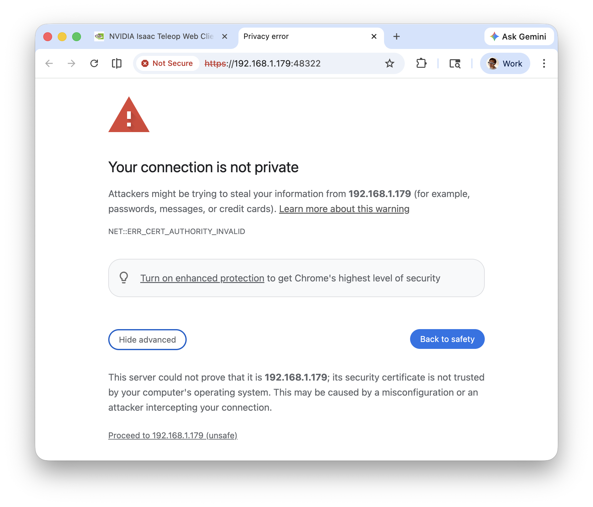

Set Up the Tools#
This page gets a workstation ready to record: the repository built, the CTS tool environments created and a headset streaming through CloudXR. Do it once per clone. Run the commands from the repository root.
1. Check the requirements#
Requirement |
Details |
|---|---|
Linux workstation |
Recording runs on Linux. The checker and the viewer also run on macOS, so you can check a take on another machine. |
Source clone with |
The CTS runs from a source clone; the |
The repository built for Python 3.12 |
The capture environment installs the cp312 |
|
The setup scripts use them to build the environments and fetch |
|
The capture panel plays the spoken cues through it. Without it the panel says so and the
take runs with on-screen cues only. Install with |
An XR headset and CloudXR |
Needed even when your device produces the joints: the capture’s OpenXR session comes from CloudXR. See step 4. |
Your plugin, installed |
|
Space and a helper |
A table and a chair. A second person at the screen makes the take easier. |
2. Build the repository#
Configure with Python 3.12 from the start. A build tree keeps the Python version it was configured
with, so delete an existing build/ before switching.
cmake -B build -DISAAC_TELEOP_PYTHON_VERSION=3.12
cmake --build build --parallel
cmake --install build
A plugin behind a BUILD_PLUGIN_<NAME> option builds only when you add
-DBUILD_PLUGIN_<NAME>=ON to the first line.
Build from Source lists the build prerequisites, and Build System explains per-Python-version build trees.
3. Create the tool environments#
The suite has a checker environment and a capture environment. This line sets up the checker first, because the capture environment reads recordings through the bindings the checker generates:
CTS=src/python/isaaccapture/cts
$CTS/hand/checker/setup_env.sh --panel && $CTS/hand/capture/setup_env.sh
--panel adds the viewer, which replays a take and packages it for submission. To only check
takes on another machine, such as a Mac, run the checker script alone there. The scripts are
idempotent and write only inside their own directory; re-run them after pulling or rebuilding.
4. Connect the headset#
CloudXR is the OpenXR runtime the capture runs on. Start recording waits until a headset has
connected, even when your device produces the joints. Use the capture interpreter, and set PY
in each terminal you open:
PY=$PWD/src/python/isaaccapture/cts/hand/capture/.venv/bin/python
Start the CloudXR service in a terminal of its own and leave it open. The first time, it shows a link to the CloudXR licence and asks you to accept it; your acceptance is remembered.
$PY -m isaaccapture.cloudxr.service run
It prints where the runtime and proxy logs are written; a headset that will not connect says why there. Run one service per workstation.
In a second terminal, set
PYagain and print the client URL:$PY -m isaaccapture.cloudxr.webclient --print-only
It prints the streaming target on its
streamrow (<host>:48322), then the client URL.Put the headset on the same network as the workstation. In the headset browser, open
https://<host>:48322/first and accept the self-signed certificate: Advanced, then Proceed. Until you do, the client loads but CONNECT fails silently.Open the client URL and press CONNECT.
What the certificate warning looks like


Choose Advanced, then Proceed. The next page reads Certificate Accepted.#
The workstation firewall must allow the CloudXR ports (4. Whitelist ports for Firewall). For device profiles, a detached service or opening the client over USB, see CloudXR Service.
Troubleshooting#
What you see |
What to do |
|---|---|
|
Build the repository (step 2), then re-run the capture setup script. |
The wheel will not install into the capture environment |
The wheel is not cp312. Delete |
|
Run the checker’s setup script before the capture one. |
|
The schema in your checkout no longer matches the one the CTS judges. Restore
|
|
Install |
The client loads but CONNECT does nothing |
Accept the certificate at |
A second CloudXR service will not start |
One is already running. |
Next, record a take: Hand Suite.